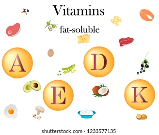

The Vitamin Partition
Action: Model the difference between fat-soluble and water-soluble vitamins and keep a running tally of each path.
Mechanical Requirement: Design a "Solubility Filter." One path must allow "Water Soluble" tokens to be flushed out into a "waste" cup, while a separate mechanism diverts "Fat-Soluble" tokens (A, D, and K) into a "Storage Tank" representing long-term tissue storage. The simulation counts each token in storage or waste.

Drag vitamin tokens into the filter; track where they go.
Vitamin B
Vitamin C
Vitamin D
Vitamin A
Vitamin K
Zinc Pill
Stone
Drop here
Stored (fat): 0
Wasted (water): 0